{kind=link}

Ever wondered why driftwood ends up sideways to the waves? The same thing happens to a drifting ship. There are well-established reasons why large waves tend to turn a ship side-on.
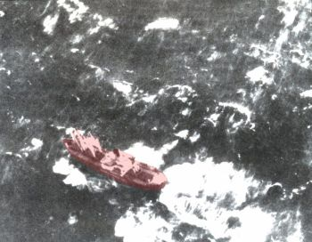 |
"Caught in the trough of heavy seas" A merchant
vessel trapped broadside to the waves prior to sinking in the North Pacific. NOAA photo archives
http://www.photolib.noaa.gov/historic/nws/wea00808.htm. Jim King: The photo is interesting because it appears that the ship is underway. Most broaching incidences on sizable ships occur when they have lost power. (There is a long history of fishing vessels broaching under power in very rough seas.) This ship should have been able to get out of the trough. Perhaps this ship lost its rudder. |
Ships are longer than they are wide, which reduces drag and allows the vessel to ride through waves more comfortably and safely. The drawback is that the ship is in danger of capsize when waves are side-on (beam sea or broadside to the waves). Broaching (turning of the ship to broadside) is the biggest risk for a ship in heavy seas, and loss of power (hence loss of control) can be a serious risk. So for a drifting ship like Noah's Ark, broaching risk must be addressed.
A major reference for ship design is the SNAME publication "Principles of Naval Architecture". The following excerpts deal with yawing motions caused by waves. Following this, excerpts and diagrams (with permission) of Russian research on ship design with concern for storm seakeeping.
Ship Motion in Waves. PNA [1]
3.16 Yawing, Yaw-heel, Leeway, Broaching. Rotation of a ship about a vertical
axis approximately through its center of gravity is called yawing [3]. It is
undesirable because its correction requires the use of rudder with increase in
resistance to propulsion and because it produces yaw-heel, which thus far no
stabilizing apparatus has been able to prevent. The deadwood and rudder of most
ships of usual form are sufficient practically to eliminate yawing in still
water, but among waves a moving ship is subjected to forces and moments which
set up yawing in spite of them. Three distinct types of forces and moments may
be identified;
(a) The static pressure of the water, which often is not at the same level on the two sides of the ship
(b) Dynamic pressure forces caused by the orbital motion of the water in waves
(c) The gyrostatic couple due to imposition of rolling motion on a pitching ship.
Unless the ship is advancing exactly at right angles to the waves, the wave profile differs on the two sides of the ship, and in general the longitudinal position of the center of pressure on one side of the ship is not the same as that on the other. This results in a couple producing rotation of the ship about a vertical axis. The direction of this couple changes as the waves move past the ship, so that the rotary motion becomes an oscillation having the same period as the apparent period of the waves. Yawing from this source has its maximum amplitude when the ship's course makes an angle of about 45 or 135 deg to the direction of advance of the waves, for then the difference of the static pressure on the two sides of the ship is greatest.
It is convenient to treat the buoyancy of fore and aft sections separately. In the following symmetrical cases both buoyancy resultants are equal, but their placement and angle can vary.
When the ship is at right angles to the waves there is no turning effect (yawing) since the fore and aft buoyancy forces are both vertical. The hull will experience bending moments due to hogging and sagging, but no net yawing (turning) moment.
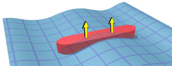
Hogging, 90 degrees to wave.
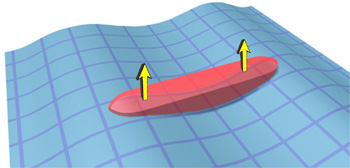
Sagging, 90 degrees to wave.
When the ship is 45 degrees to the waves, the buoyancy force at the bow is swinging the ship's head to port. Assuming a worst-case wavelength, the stern will also experience a buoyancy force that pushes the stern to starboard. The net effect is a yawing moment, anti-clockwise in this case. (Viewed from above)
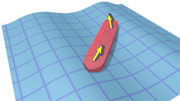
Sagging, 45 degrees to wave. Strong anti-clockwise yaw.
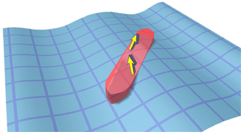
Hogging, 45 degrees to wave. Weak clockwise yaw.
According to PNA,
"The direction of this couple changes as the waves move past the ship, so that the rotary motion becomes an oscillation having the same period as the apparent period of the waves."
However, when the buoyancy forces are viewed as a couple (separating fore and aft), it is clear that the yawing moment in sag will be greater than at the hogging condition because the moment arm is greater. Hence the "oscillation" of a strong anti-clockwise yaw followed by a weak clockwise yaw will apply a net yawing moment - anti-clockwise. Hydrostatically, regular waves will turn any long floating thing sideways, especially if the wavelength is somewhere near the length of the vessel.
(b) Dynamic pressure forces caused by the orbital motion of the water in waves
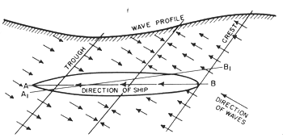
Fig. 86 Anticlockwise yaw in a quartering sea. Wave crest at stern (Image PNA)
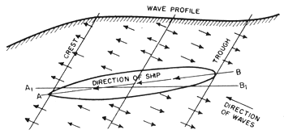
Fig. 87 Clockwise restoring yaw in a quartering sea. Wave trough at stern (Image PNA)
The water particles in waves revolve in orbits; at the wave crests the water particles are moving in the direction of advance of the waves and in the troughs in the opposite direction. As the water strikes the ship dynamic forces are imposed on the ship. Figs. 86 and 87 from [75] show the action of these dynamic pressure forces. In Fig. 86 the excess of pressure on the port quarter and starboard bow swing the ship's head to port, from line A B to A1B1. Half a wave period later, the excess pressure is on the starboard quarter and the port bow and causes a change in the ship's direction from AB to A1B1; i.e., a yaw to starboard, as shown in Fig. 87. Hence the dynamic effect of the waves is to produce yawing in the apparent wave period.
Water is not transported by a wave, but moves in a circular path. Yawing is effected by the horizontal component of this orbital motion, which is zero halfway up the wave, maximum in forward direction at wave crest and backward motion highest in the trough. According to the diagrams above (PNA figs 86 & 87) this is an oscillating effect which appears to be equal in either direction, so there should be no net yawing action over time. Orbital motion could contribute to a broach if it were possible to yaw the ship beyond the 45 degree hydrostatic maxima. However, the worst condition for hydrostatic yaw is when effective wavelength = ship length, but for orbital yaw effective wavelength = 2 * ship length. So the critical wavelength for a combined effect should be somewhere between these two limits.
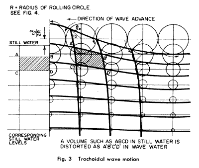
Image: PNA(c) The gyrostatic couple due to imposition of rolling motion on a pitching ship.
If a pitching ship is made to roll, as is the case when a ship advances obliquely to the waves, the axis of roll is not a fixed horizontal line in space but an axis which itself oscillates an amount equal to the angular amplitude of pitching. This oscillation of the axis of roll sets up a gyrostatic couple, which causes yawing. This was first pointed out and verified experimentally by Suyehiro [76 ] who found that hemispherical models so loaded as to displace the center of gravity from the geometrical center yawed among waves in the same manner as ship-shaped models.
The direction of yawing produced by the gyrostatic couple depends upon the relation between the periods of the ship in rolling and in pitching and the apparent wave period. Five cases will be considered. First, when the wave period is less than the period of pitching, the direction of the gyrostatic couple is constant, and the yaw of the ship is such as to tend to place the longitudinal center- line plane parallel to the wave crests and hollows. In this case the ship does not yaw when it proceeds broad- side to the waves. In the second case, the period of pitching and that of the waves is the same. The direction of the gyrostatic couple is not constant and the ship yaws continuously. The third case is that for which the period of the waves is greater than the period of pitching but less than the period of rolling. In that event the direction of the gyrostatic couple is constant and opposite to that of the first case, so that the ship tends to place itself normal to the wave crests and hollows. When the period of the waves is the same as the ship's period of roll, conditions as regards yawing are similar to those of the second case; the ship yaws continually. The fifth case, in which the period of waves is greater than the period of roll, results in yawing similar to that of the first case; the ship tends to place itself broadside to the wave crests and hollows.
Under conditions favorable for yawing the gyrostatic couple is seldom great and usually requires less rudder angle to control it than do other causes of yaw.
Of the 5 cases, only case 1 (very short wavelength) and case 5 (very long wavelength) create a broaching effect. Since we are dealing with heavy seas, case 1 is not relevant. Some advantage might be gained by increasing the roll period beyond the wave period, usually to the detriment of outright roll stability. However, the PNA authors concluded that yawing due to gyrostatic couple is "seldom great". However, in combination with the wavelengths stated previously (between 1 and 2 effective ship lengths), a roll period that is longer than the wave period might be prudent here. This could mean a reduction in outright stability in order to lower the roll restoration force. It also promotes a high roll inertia (mass moment of inertia) which could be achieved by loading towards the hull walls but with an open centre, use of a heavy roof, and possibly adding mass at a distance - such as afforded by a tall mast.
From Technical and Historical Analysis of Ship Seakeeping, Vasily N. Khramushin [5]
There are more constraints applied to a commercial ship than Noah's Ark, notably the need for low drag in forward motion and ability to navigate without resorting to changing course to a direct head sea (or following sea).
Khramushin gives historical examples of storm-suited ship designs, highlighting hull characteristics such as lateral asymmetry, rounded transverse hull shape and methods of storm navigation by either head sea or following sea. For example, the Greek style ship has a hull with center of lateral resistance towards the bow and lateral wind resistance towards the stern. Obviously the sail would removed in a serious storm.
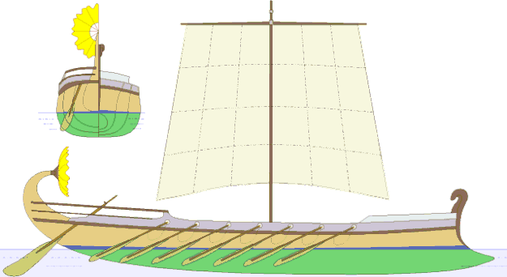
Head Sea. A depiction of the "ship of argonauts", which inherited the seaworthiness of Phoenician warships. The lateral asymmetry of the hull makes it naturally point into the wind, allowing bow-first navigation into a gale (head sea). http://www.science.sakhalin.ru/Ship/Vlad_E1.html#P4 Used with permission [2]
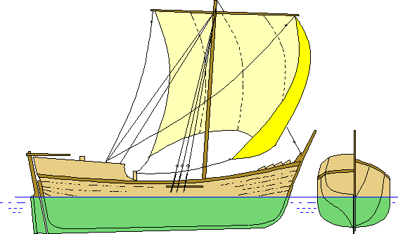
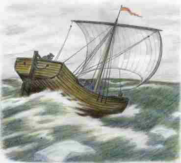
Following Sea. Fishing vessel of the Russian pomors (coast dwellers known for daring arctic voyages at the time of the Vikings). The hull form allows active maneuvering in gale seas with the storm sail and drag to stern allowing the vessel to run in a following sea. http://www.science.sakhalin.ru/Ship/Vlad_R1.html#p3 Used with permission [2]
The following excerpt has been reworded by Tim Lovett. See Russian Original [4]
According to Vasily N. Khramushin, the universal vessel addresses three interdependent constraints;
The solution takes into account real navigational issues such as storm conditions. In attempting to satisfy the above constraints while considering an historical analysis of ship design features, the following six concepts of the design are suggested;
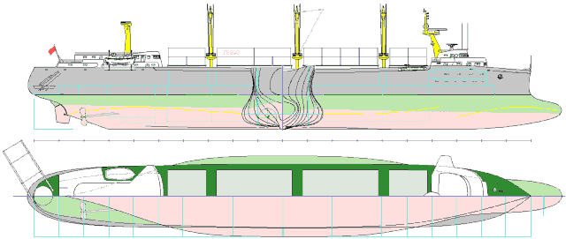
"Universal vessel" Pic 11 from http://www.science.sakhalin.ru/Ship/Vlad_E1.html#P11 Used with permission [2]
Assuming hydrostatic yawing to be a significant broaching factor in a heavy regular sea, then it might be possible to suggest an appropriate hull form. By minimizing the dominant yaw during sagging, and maximizing the weaker restoring yaw when hogging. This might lead to a hull form more like a canoe and less like a block (low block coefficient). Reduced bow and stern buoyancy might minimize the dominant yawing action by keeping the buoyancy force close to amidships when riding a trough.
Minimize the dominant yaw in sag (ACW) and maximize the restoring yaw in hog (CW).
Conversely, a pure block shape would be expected to have a stronger tendency to broach. The hog condition would be unchanged since both hulls have a similar parallel mid-body. However, when the hull is bridging a trough (sag) the extremities on the hull acquire a large yawing moment. In this case a full cross-section is immersed in the steepest portion of the oblique wave, giving a significant increase in yaw moment (more than the corresponding volume increase since the wave is steeper towards the bow or stern).
Comparison of displaced volumes for half the hull at 45 degrees to wave in sagging (trough amidships)
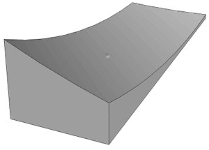
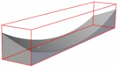
Highest broaching effect is expected with a block shaped hull.
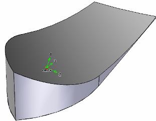
A finer bow and stern would reduce hydrostatic wave yaw.
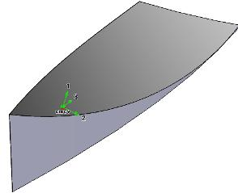
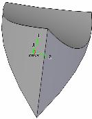
Lowest net hydrostatic broaching moment expected with a canoe-shaped hull.
No hull shape (where length is greater than width) would overcome the natural tendency to broach, but a minimal yawing moment will make it easier to keep the vessel perpendicular to the waves. With a weaker broadside pull, less effort is needed to steer the vessel using the lateral asymmetry between the centre of action of the water and wind loads. There are several ways to achieve this directional effect, such as wind obstacles (sails or pronounced forecastle), trim by the stern (sitting lower at the stern and higher at the bow) , sea anchors or lateral water resistance at the stern (e.g. skeg, rudder or other obstacle in the water).
The prescription for minimizing the risk of broaching is to have a relatively fine bow and stern without compromising buoyancy. This does not exactly favor a block-shaped hull. There are other factors in ship design of course, but broaching is certainly a priority issue when waves are not trivial and the drifting vessel is six times as long as it is wide. Furthermore, accelerations increase as the hull approaches a more block-like form.
Compared to a typical ship, Noah's Ark has less demands compromising the design, such as drag. Broaching must be avoided in a following sea [6] as a top priority, but no other heading would be desired or promoted in a drifting vessel. Also, the Ark is not required to travel at speed. While outright stability is important to avoid capsize by a broadside wave, it would be logical to minimize accelerations also, which is something of a compromise.
A following sea can be dangerous. With insufficient bow buoyancy, a large wave approaching from behind can tend to lift the stern and drive the bow into the water. This can result in a sudden broach and even capsize.
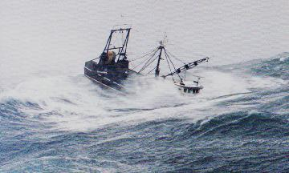
A fishing vessel in a following sea http://www.opc.ncep.noaa.gov/perfectstorm/rough_seas2.gif
The risk of broaching in these conditions can be lessened by avoiding a wide flat transom, reducing stern buoyancy and increasing bow buoyancy. A finer stern (double ender) helps too, approximating the bow of a ship in a head sea.
1. Principles of Naval Architecture SNAME Return to text
2. Вы можете совершенно свободно пользоваться любыми материалами,
рисунками или программами, опубликованными на нашем сайте "Наука"
www.Science.Sakhalin.ru
You can use completely freely any materials, figures or the programs
published on our site "Science"
www.Science.Sakhalin.ru
Vasily N. Khramushin Academic secretary of Sakhalin
Division of Russian Geography Society, Head of Computational Fluid Mechanics and
Oceanography lab. Special Research Bureau for Automation of Marine Researches,
Far Eastern Branch of Russian Academy of Sciences.
http://www.Science.Sakhalin.ru/ocean
Return to text
3. The six motions;
4. Russian original; Vasily N. Khramushin http://www.science.sakhalin.ru/Ship/Vlad_R1.html Return to text
5. Vasily N. Khramushin, Technical and Historical Analysis of Ship Seakeeping, http://www.science.sakhalin.ru/Ship/Vlad_E1.html Return to text
6. Noah's Ark in a "following sea": We have adopted the term "following sea" where the "stern" of Noah's Ark should face the wind, and the "bow" is supposed to point away from the wind. Alternatively it could be considered as a head sea situation with the vessel running backwards, swapping the bow and stern definitions around. For the sake of consistency we will define the bow and stern in terms of the Ark running in a following sea (traveling forward with the wind). Return to text